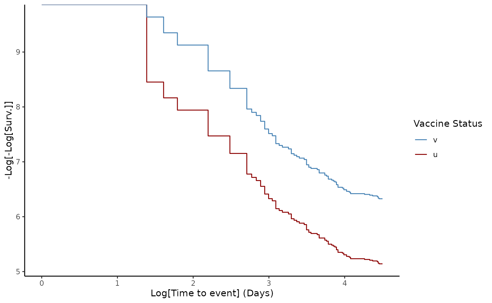

Usage
Vaccines are created to offer protection against diseases that affect human health. Quantifying how well vaccines work in controlled environments and in real-life settings remains a challenge for scientists. Estimating vaccine effectiveness () is a key task once a vaccine is available as a control measure within a population, such as during the middle phase of an epidemic like Ebola or COVID-19, and also in the evaluation of regular vaccination programs, such as childhood vaccines.
vaccineff provides tools to estimate
under different study designs (Halloran, Longini, and Struchiner
2010). The package provides a set of features for preparing
the data, estimating crude and adjusted effectiveness, controlling for
potential confounders such as age and assessing the performance of the
models used to approximate
.
Who are the users / potential users?
vaccineff is useful for local, national, and
international health agencies looking for a quick implementation to
estimate
based on their available data. It also provides insights to researchers,
data analysts, and epidemiology students on how to approach
using different methods. We believe that vaccineff would be
specially useful for users without advanced training in statistical
methods.
What is vaccine effectiveness?
In contrast with vaccine efficacy, which is the percentage reduction of disease incidence in a vaccinated group compared with an unvaccinated group under ideal conditions, is the percentage reduction of disease incidence in a vaccinated group compared with an unvaccinated group under routine conditions. The reduction attributable to vaccination is usually assessed from data collected in observational studies (Halloran, Longini, and Struchiner 2010). Evaluating the effectiveness of vaccines in the field is an important aspect of monitoring immunization programs.
For which designs is this package?
vaccineff is a package designed to be used for any
infectious disease for which a vaccine strategy has been implemented.
This current version only allows measuring
for cohort study designs. Future version will include other designs such
as test-negative/case-control studies, and the screening method (Torvaldsen
and McIntyre 2002). For more information, see the vignette Other
designs.
Cohort Design
In the cohort design, is estimated using the Hazard Ratios () between vaccinated and unvaccinated populations,
The is estimated using the Cox Proportional Hazards model. In particular, we use the vaccine status of the individuals as the only covariate in the regression. Other confounders can be included as matching arguments to adjust for observational bias. The proportional hazards hypothesis is checked using the Schoenfeld test. A visual check is also provided using the log-log representation of the Survival Probability. If the hypothesis is not satisfied, it is recommended to stratify the population into smaller groups using the confounding variables.
What type of data is needed to use the package?
This package is designed to be used with vaccination data sets with the following structure.
Data for Cohort design
Data should be disaggregated at the individual level to track vaccinated and unvaccinated populations over time. The dataset must include the following information:
Date(s) of vaccination for each individual: The package allows for multiple doses per individual and estimates the immunization date using delay times of outcomes and the timing of vaccine administration.
Date(s) of outcome(s): The package estimates vaccine effectiveness against various outcomes.
Date(s) of right censoring: The package allows for the inclusion of information on dates of events that constitute right censoring.
Individuals’ demographic information (e.g., sex, age group, health status): These can be used as confounding variables to match the population and reduce observational bias.
An example dataset for a cohort design is included, with information on vaccination dates and biological details per dose, as well as relevant demographic information. The level of data aggregation is tailored to the characteristics and needs of the study case. To load this dataset, run the following code
# Load example data
data("cohortdata")
head(cohortdata)
#> id sex age death_date death_other_causes vaccine_date_1 vaccine_date_2
#> 1 afade1b2 F 37 <NA> <NA> <NA> <NA>
#> 2 556c8c76 M 19 <NA> <NA> <NA> <NA>
#> 3 04edf85a M 50 <NA> <NA> <NA> <NA>
#> 4 7e51a18e F 8 <NA> <NA> <NA> <NA>
#> 5 c5a83f56 M 66 <NA> <NA> <NA> <NA>
#> 6 7f675ec3 M 29 <NA> <NA> 2044-04-09 2044-04-30
#> vaccine_1 vaccine_2
#> 1 <NA> <NA>
#> 2 <NA> <NA>
#> 3 <NA> <NA>
#> 4 <NA> <NA>
#> 5 <NA> <NA>
#> 6 BRAND1 BRAND1Modeling vaccine effectiveness
VE for Cohort design
The current release of the package bases the estimation of in the cohort design on the assumption of proportional hazards between vaccinated and unvaccinated populations. The is estimated using the Cox proportional hazards model implemented in the R package survival.
The integrated dataset cohortdata serves as a minimal
example of the package’s input. The data is accessed using
data("cohortdata").
vaccineff has three main functions: 1.
make_vaccineff_data: This function returns an S3 object of
the class vaccineff_data with the relevant information for
the study. This function also allows to create a matched cohort to
control for confounding variables by setting match = TRUE
and passing the corresponding exact and
nearest arguments. make_vaccineff_data
supports the method summary() to check the characteristics
of the cohort, the matching balance and the sizes of matched, excluded,
and removed populations.
plot_coverage: This function returns a plot of the vaccine coverage or the cumulative coverage. If the population is matched, the plot also includes the resulting count of doses after matching.estimate_vaccineff: This function provides methods for estimating VE using the . A summary of the estimation can be obtained usingsummary()and a graphical representation of the methodology is generated byplot().
# Create `vaccineff_data`
vaccineff_data <- make_vaccineff_data(
data_set = cohortdata,
outcome_date_col = "death_date",
censoring_date_col = "death_other_causes",
vacc_date_col = "vaccine_date_2",
vaccinated_status = "v",
unvaccinated_status = "u",
immunization_delay = 15,
end_cohort = as.Date("2044-12-31"),
match = TRUE,
exact = c("age", "sex"),
nearest = NULL
)
# Print summary of vaccineff data object
summary(vaccineff_data)
#> Cohort start: 2044-03-25
#> Cohort end: 2044-12-31
#> The start date of the cohort was defined as the mininimum immunization date.
#> 79 registers were removed with outcomes before the start date.
#>
#> Nearest neighbors matching iteratively performed.
#> Number of iterations: 4
#> Balance all:
#> u v smd
#> age 30.9006989 48.3349260 0.8765144
#> sex_F 0.4836599 0.5761684 0.1861500
#> sex_M 0.5163401 0.4238316 -0.1861500
#>
#> Balance matched:
#> u v smd
#> age 44.028537 44.028537 0
#> sex_F 0.552095 0.552095 0
#> sex_M 0.447905 0.447905 0
#>
#> Summary vaccination:
#> u v
#> All 62668 37253
#> Matched 27613 27613
#> Unmatched 35055 9640
#>
#> // tags: outcome_date_col:death_date, censoring_date_col:death_other_causes, vacc_date_col:vaccine_date_2, immunization_date_col:immunization_date, vacc_status_col:vaccine_status
# Plot the vaccine coverage of the total population
plot_coverage(vaccineff_data)
# Estimate the Vaccine Effectiveness at 90 days
ve90 <- estimate_vaccineff(vaccineff_data, at = 90)
# Print summary of VE
summary(ve90)
#> Vaccine Effectiveness at 90 days computed as VE = 1 - HR:
#> VE lower.95 upper.95
#> 0.6939 0.4882 0.8169
#>
#> Schoenfeld test for Proportional Hazards assumption:
#> p-value = 0.0274
#> Warning in print.summary_vaccineff(x):
#> p-value < 0.05. Please check loglog plot for Proportional Hazards assumption
# Loglog plot to check proportional hazards
plot(ve90, type = "loglog")
For details on the estimation of VE in cohort studies see the vignette Introduction to cohort design with vaccineff